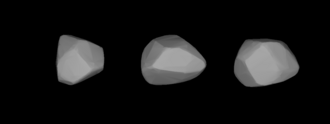

Un universo para ti ✨
Hay millones de cuerpos celestes, pero solo uno lleva tu nombre.

Descubre tu asteroide
(222) Lucia
Un pequeño mundo que viaja por el cinturón principal, mucho antes de que comenzara nuestra historia.
1882Descubierto
5.57 añosPeríodo orbital aprox.
Marte – JúpiterCinturón principal
Nuestra historia
4 años · 1 mes
Desde el 10 de agosto de 2022
Las órbitas y la imagen de Lucia son ilustrativas, no representan posiciones ni detalles astronómicos exactos.